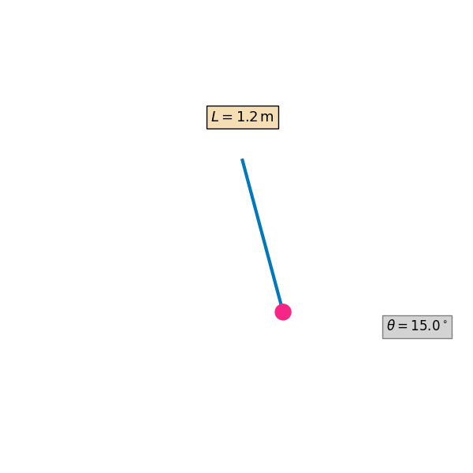
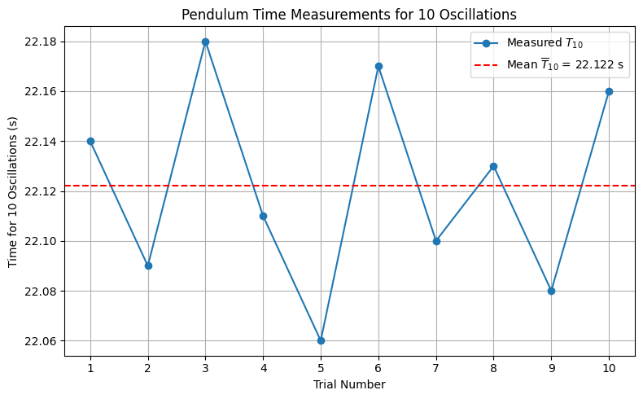

Problem 1
📏 Measuring Earth's Gravitational Acceleration with a Pendulum
🔷 Theoretical Background
The acceleration due to gravity, denoted as \(g\), is a fundamental physical constant influencing motion and structure in both classical and modern physics. One of the most reliable classical methods to determine \(g\) involves analyzing the motion of a simple pendulum.
The period of a simple pendulum under the small-angle approximation (\(\theta < 15^\circ\)) is given by:
Where: - \(T\) is the period of oscillation, - \(L\) is the length from the suspension point to the center of mass of the bob, - \(g\) is the local gravitational field strength.

🧪 Materials & Setup
✅ Materials Needed
- A string (~1 or 1.5 meters long)
- A small weight (e.g., bag of coins, sugar, or a keychain)
- A stopwatch or smartphone timer
- A ruler or measuring tape
Measuring Earth's Gravitational Acceleration with a Pendulum
1. Experimental Setup
- Pendulum Length (L): 1.2 m
- Object Used as Weight: 500 g salt pack
- Measuring Tool Resolution: 1 mm
- Uncertainty in Length (\(\Delta L\)): 0.0005 m (½ of 1 mm)
2. Time Measurements

Each value below represents the time for 10 complete oscillations of the pendulum.
| Trial | Time for 10 Oscillations (\(T_{10}\)) [s] |
|---|---|
| 1 | 22.14 |
| 2 | 22.09 |
| 3 | 22.18 |
| 4 | 22.11 |
| 5 | 22.06 |
| 6 | 22.17 |
| 7 | 22.10 |
| 8 | 22.13 |
| 9 | 22.08 |
| 10 | 22.16 |
-
Mean Time for 10 Oscillations (\(\overline{T}_{10}\)): 22.122 s
-
Standard Deviation (\(\sigma_T\)): 0.041 s
-
Uncertainty in Mean Time (\(\Delta T_{10}\)): 0.013 s (\(\sigma_T/\sqrt{10}\))
3. Period and Uncertainty
- Period (\(T\)):
- Uncertainty in Period (\(\Delta T\)):
4. Gravitational Acceleration Calculation
Using the formula:
-
\[g=\frac{4\pi^2\cdot1.2}{(2.212)^2}\approx9.65\ \text{m/s}^2\]
5. Uncertainty in \(g\)
Propagation of uncertainty:
-
\[\frac{\Delta L}{L}=\frac{0.0005}{1.2}\approx0.00042\]
-
\[\frac{\Delta T}{T}=\frac{0.0013}{2.212}\approx0.00059\]
-
\[\Delta g\approx9.65\cdot\sqrt{(0.00042)^2+(2\cdot0.00059)^2}\approx0.011\ \text{m/s}^2\]
-
Final Result:
6. Analysis
- The measured value of \(g\) is slightly lower than the standard value (9.81 m/s²), which may be due to timing inaccuracies or slight deviations from the small-angle approximation.
- Measurement resolution affects \(\Delta L\); finer rulers would reduce uncertainty.
- Human reaction time influences \(\Delta T\), even when measuring 10 oscillations.
- Assumptions made:
- The pendulum swings in a perfect arc.
- Air resistance and friction at the pivot are negligible.
- The swing angle is less than 15°